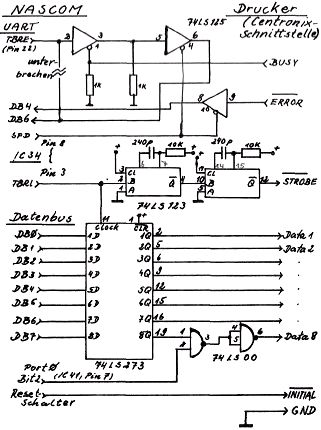

Nascom Journal |
Juni 1981 · Ausgabe 6 |
Viele billige Drucker,z.B. der EPSON MX-80 oder der SEIKO GP-80,haben standardmäßig eine Centronix-Schnittstelle und bieten eine Nascom-kompatible serielle Schnittstelle nur gegen Aufpreis (250 Mark). Wer das bezahlt, ist selbst schuld. Man kann natürlich aus beiden Ports der PIO eine Parallelschnittstelle softwaremäßig aufbauen. Dann sind jedoch die leistungsfähigen X-Befehle von T4 oder NAS-SYS nicht ausgenutzt, und man muß die ganze Software mit neuen Druckprogrammen versehen. Ich habe für den Anschluß meines Seiko-Druckers eine andere Lösung gewählt: eine Centronix-Schnittstelle wurde aus 4 TTL-IC’s aufgebaut und parallel zu dem UART geschaltet.
Alle Daten, die an den UART ausgegeben werden, gelangen nun auch zum Drucker.Die Baudrate kann beliebig hoch eingestellt werden, da über das TBRE-Signal nun auch die BUSY-Meldung des Druckers abgefragt wird. Über Port 0, Bit 2 kann das höchstwertige Datenbit gesperrt werden; dies ist für normalen Betrieb erforderlich, da der X-Befehl Bit 7 als Paritätsbit ausgibt. Will man Bit 7 in speziellen Druckerprogrammen mitbenutzen, muß vorher also Bit 2 in Port 0 auf 1 gesetzt werden. In Port 2,Bit 4 kann das Error-Signal des Druckers abgefragt werden.
Nachdem die 2716’er technisch gegenüber den 2708’ern sowieso schon alle Trümpfe auf ihrer Seite hatten (doppelte Kapazität, geringerer Stromverbrauch, nur 5 V, einfacher zu programmieren), sind sie mittlerweile auch billiger geworden. Dies war für mich ein Anlass, um die 4 Sockel auf der 32k RAM-Karte zur Aufnahme von 5 V-2716’ern vorzubereiten; so finden 8kEprom auf der Karte Platz. Eine spätere Erweiterung auf 16k in 2732’ern ist leicht möglich. Die notwendigen Änderungen sind in 10 Minuten gemacht. Man unterbreche mit einem scharfen Instrument die Leiterbahn von IC 20, Pin 13 zu IC 24, Pin 2; außerdem die Bahn von +12 V zu Pin 19
| Seite 10 von 20 |
|---|